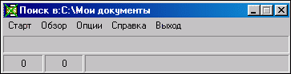

Описание AntiDupl-1.17Общие сведения:Если вы храните на своем компьютере большое количество изображений в формате Jpeg, то возможна ситуация, когда эти изображения дублируются (или присутствуют картинки которые изображают одинаковый объект, но с разными разрешением или степенью сжатия). Кроме того, при скачивании Jpeg-картинок с Интернета они иногда не докачиваются до конца - мы получаем поврежденные картинки (изображение на таких картинках содержит дефекты). Понятно, что дополнительные копии и файлы с дефектами просто зря занимают место на винчестере. При большом колличестве картинок ручной поиск одинаковых и поврежденных файлов - довольно утомительное занятие (проверено на себе :-)), по этому жалательно наличие программы, автоматизирующей данный процесс. AntiDupl как раз предназначена для этих целей. Программа ищет одинаковые (похожие) и дефектные картинки в заданном каталоге и удаляет таковые в автоматическом режиме или с запросом у пользователя. Возможно управление параметрами поиска. Программа имеет русский и английский интерфейс. Описание работы:Программа имеет внешний вид:  В меню «Обзор» (Browse) можно выбрать папку, в которой требуется осуществить поиск картинок, (текущая папка отображается в заглавии программы) после чего нажать кнопку «Старт» (Start). Во время поиска отображается общее число файлов, номер текущего файла и его название. Если программа найдет одинаковые (похожие) картинки, то выдаст запрос, предлагая пользователю удалить одну из одинаковых картинок (при этом отображаются сами картинки, их названия, размеры файлов, разрешение картинок и путь к ним). Аналогичный запрос возникает при нахождении картинки с дефектами. Если программа не выделена (ее индикатор на панели задач неактивен), то понять ее состояние можно по цвету ярлыка:
- – найдены одинаковые или дефектные картинки, и программа ожидает решения пользователя. Дополнительные возможности:
В пункте меню «Опции» (Option) можно дополнительно регулировать следующие
настройки:
Особенности работы:
А) Если картинки представляют собой небольшие изображения на черном фоне, то
учащается вероятность ложных срабатываний. Аналогичная ситуация для графиков.
Системные требования:Операционная система Windows 9x – XP. Установка:Не требуется. Лицензия:Программа может использоваться всеми желающими по своему усмотрению. Автор не несет ответственности за возможный ущерб, вызванный использованием программы. Разработчики:Ермолаев Игорь (Минск, Беларусь) 2002-2005. Приятного использования! |
 - поиск завершен.
- поиск завершен.
 - идет поиск.
- идет поиск.